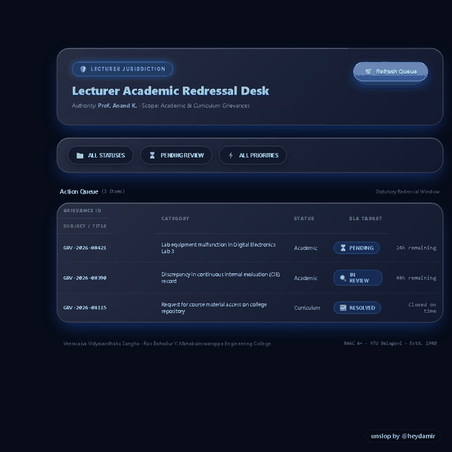

Unslop Story Animation · 10-Second Redline Transformation
RYMEC Grievance Desk
Transformation: Spacing Redlines → Color/Icons → Typography → Details & Radii

▶ Play Full Animation
Beat 0: Slop Audit
Beat 1: Spacing
Beat 4: Final Craft